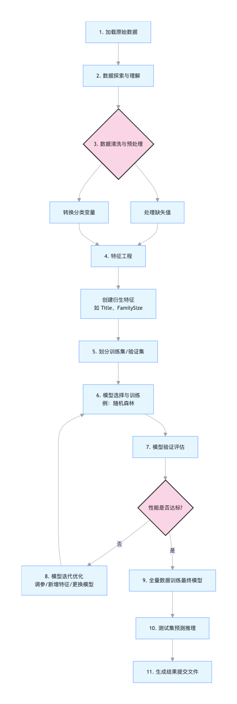

Predicción de supervivencia del Titanic
Si estás empezando a aprender machine learning, puede que los algoritmos complejos y las fórmulas matemáticas te parezcan lejanos del mundo real. Pero hoy, a través de un caso clásico —la predicción de supervivencia del Titanic—, experimentaremos de primera mano el flujo completo de un proyecto de machine learning.
El conjunto de datos del Titanic es uno de los proyectos de introducción más famosos en el campo del aprendizaje automático. Se basa en la información real de los pasajeros del hundimiento del Titanic en 1912. Nuestro objetivo es:Construir un modelo para predecir si un pasajero sobrevivió al desastre, basándonos en información como edad, sexo, clase de boleto, etc.。
Este proyecto es clásico porque cubre perfectamente los pasos centrales de un proyecto de machine learning:
- Comprensión y exploración de los datos
- Limpieza y preprocesamiento de datos
- Ingeniería de características
- Selección y entrenamiento del modelo
- Evaluación y optimización del modelo
A través de este caso práctico, ya no solo leerás teoría, sino que entenderás realmente cómo aplicar el machine learning para resolver problemas del mundo real.
Primer paso: entender nuestros datos
Antes de escribir cualquier código, debemos conocer los datos que tenemos. El conjunto de datos del Titanic generalmente incluye los siguientes campos (características):
| Nombre del campo | Descripción | Tipo de dato | Notas |
|---|---|---|---|
PassengerId |
ID del pasajero | Entero | Identificador único, no ayuda en la predicción |
Survived |
Supervivencia | Entero (0/1) | Variable objetivo, 0=fallecido, 1=sobrevivió |
Pclass |
Clase de boleto | Entero (1,2,3) | 1=primera clase, 2=segunda clase, 3=tercera clase |
Name |
Nombre del pasajero | Cadena | Contiene títulos (como Mr., Miss.), se puede extraer nuevas características |
Sex |
Sexo | Cadena | male 或 female |
Age |
Edad | Flotante | Tiene algunos valores faltantes |
SibSp |
Número de hermanos/cónyuges a bordo | Entero | |
Parch |
Número de padres/hijos a bordo | Entero | |
Ticket |
Número de boleto | Cadena | Estructura compleja, puede tener información limitada |
Fare |
Precio del boleto | Flotante | |
Cabin |
Número de camarote | Cadena | Muchos valores faltantes, pero la primera letra puede representar el área del camarote |
Embarked |
Puerto de embarque | Cadena | C=Cherbourg, Q=Queenstown, S=Southampton |
Información clave:Por conocimiento histórico sabemos que en ese momento se aplicaba el principio de "mujeres y niños primero", y que los pasajeros de primera clase tenían prioridad para usar los botes salvavidas. Por lo tanto, esperamosSex, Age, Pclassque características como estas tengan un gran impacto en los resultados de predicción.
Segundo paso: limpieza y preprocesamiento de datos
Los datos originales casi nunca son perfectos.
La limpieza de datos es como preparar ingredientes de alta calidad para el modelo; este paso es crucial.
Guarda los siguientes datos en el archivo train.csv:
PassengerId,Survived,Pclass,Name,Sex,Age,SibSp,Parch,Ticket,Fare,Cabin,Embarked 1,0,3,"Braund, Mr. Owen Harris",male,22,1,0,A/5 21171,7.25,,S 2,1,1,"Cumings, Mrs. John Bradley",female,38,1,0,PC 17599,71.2833,C85,C 3,1,3,"Heikkinen, Miss. Laina",female,26,0,0,STON/O2. 3101282,7.925,,S 4,1,1,"Futrelle, Mrs. Jacques Heath",female,35,1,0,113803,53.1,C123,S 5,0,3,"Allen, Mr. William Henry",male,35,0,0,373450,8.05,,S 6,0,3,"Moran, Mr. James",male,,0,0,330877,8.4583,,Q 7,0,1,"McCarthy, Mr. Timothy J",male,54,0,0,17463,51.8625,E46,S 8,0,3,"Palsson, Master. Gosta Leonard",male,2,3,1,349909,21.075,,S 9,1,3,"Johnson, Mrs. Oscar W",female,27,0,2,347742,11.1333,,S 10,1,2,"Nasser, Mrs. Nicholas",female,14,1,0,237736,30.0708,,C
Guarda los siguientes datos en el archivo test.csv:
PassengerId,Pclass,Name,Sex,Age,SibSp,Parch,Ticket,Fare,Cabin,Embarked 11,3,"Kelly, Mr. James",male,34.5,0,0,330911,7.8292,,Q 12,3,"Wilkes, Mrs. James",female,47,1,0,363272,7,,S 13,2,"Myles, Mr. Thomas Francis",male,62,0,0,240276,9.6875,,Q 14,3,"Dwyer, Miss. Ellen",female,18,0,0,330959,7.75,,Q 15,1,"Jones, Mr. Charles",male,,1,0,PC 17603,82.1708,B28,C
Usaremos la libreríapandas 和 numpyde Python para realizar este trabajo.
Ejemplo
import pandas as pd
import numpy as np
# Cargar los datos
train_data = pd.read_csv('train.csv') # Conjunto de entrenamiento, incluye la variable objetivo Survived
test_data = pd.read_csv('test.csv') # Conjunto de prueba, no incluye Survived, se usa para la evaluación final
# 1. Inspección preliminar de los datos
print("Forma del conjunto de entrenamiento:", train_data.shape)
print(train_data.info()) # Ver tipos de datos y valores faltantes
print(train_data.head()) # Ver las primeras filas de datos
Salida:
训练集形状： (10, 12) <class 'pandas.core.frame.DataFrame'> RangeIndex: 10 entries, 0 to 9 Data columns (total 12 columns): # Column Non-Null Count Dtype --- ------ -------------- ----- 0 PassengerId 10 non-null int64 1 Survived 10 non-null int64 2 Pclass 10 non-null int64 3 Name 10 non-null object 4 Sex 10 non-null object 5 Age 9 non-null float64 6 SibSp 10 non-null int64 7 Parch 10 non-null int64 8 Ticket 10 non-null object 9 Fare 10 non-null float64 10 Cabin 3 non-null object 11 Embarked 10 non-null object dtypes: float64(2), int64(5), object(5) memory usage: 1.1+ KB None PassengerId Survived Pclass Name Sex ... Parch Ticket Fare Cabin Embarked 0 1 0 3 Braund, Mr. Owen Harris male ... 0 A/5 21171 7.2500 NaN S 1 2 1 1 Cumings, Mrs. John Bradley female ... 0 PC 17599 71.2833 C85 C 2 3 1 3 Heikkinen, Miss. Laina female ... 0 STON/O2. 3101282 7.9250 NaN S 3 4 1 1 Futrelle, Mrs. Jacques Heath female ... 0 113803 53.1000 C123 S 4 5 0 3 Allen, Mr. William Henry male ... 0 373450 8.0500 NaN S [5 rows x 12 columns]
Después de ejecutar el código anterior, puedes encontrar dos problemas principales:Valores faltantes 和 Datos no numéricos。
Manejo de valores faltantes
Ejemplo
print(train_data.isnull().sum())
# Manejar Age (Edad): rellenar con la mediana
train_data['Age'] = train_data['Age'].fillna(train_data['Age'].median())
test_data['Age'] = test_data['Age'].fillna(test_data['Age'].median())
# Manejar Embarked (Puerto de embarque): rellenar con la moda
most_common_port = train_data['Embarked'].mode()[0]
train_data['Embarked'] = train_data['Embarked'].fillna(most_common_port)
test_data['Embarked'] = test_data['Embarked'].fillna(most_common_port)
# Manejar Fare (Precio del boleto): en el conjunto de prueba
test_data['Fare'] = test_data['Fare'].fillna(test_data['Fare'].median())
# Manejar Cabin (Camarote): eliminar directamente
train_data.drop(columns=['Cabin'], inplace=True)
test_data.drop(columns=['Cabin'], inplace=True)
Convertir datos no numéricos
Los modelos de machine learning generalmente solo pueden procesar valores numéricos. Necesitamos convertir columnas de texto comoSex 和 Embarkeden números.
Ejemplo
train_data['Sex'] = train_data['Sex'].map({'female': 0, 'male': 1})
test_data['Sex'] = test_data['Sex'].map({'female': 0, 'male': 1})
# Convertir la columna Embarked a numérico (codificación one-hot)
# Como no hay un orden natural entre puertos, no es adecuado usar un mapeo simple 0,1,2
train_data = pd.get_dummies(train_data, columns=['Embarked'])
test_data = pd.get_dummies(test_data, columns=['Embarked'])
Tercer paso: ingeniería de características
La ingeniería de características es la "magia" del machine learning; ayuda al modelo a aprender mejor creando o transformando características. Nosotros deNamela columna extraemos el "título", un ejemplo clásico.
Ejemplo
# El título a menudo refleja edad, estatus social y sexo, y puede afectar la prioridad de rescate
train_data['Title'] = train_data['Name'].str.extract(' ([A-Za-z]+)\.', expand=False)
test_data['Title'] = test_data['Name'].str.extract(' ([A-Za-z]+)\.', expand=False)
# Ver qué títulos existen
print(pd.crosstab(train_data['Title'], train_data['Sex']))
# Agrupar los títulos poco comunes como 'Rare'
title_mapping = {
'Mr': 'Mr', 'Miss': 'Miss', 'Mrs': 'Mrs',
'Master': 'Master', 'Dr': 'Rare', 'Rev': 'Rare',
'Col': 'Rare', 'Major': 'Rare', 'Mlle': 'Miss',
'Countess': 'Rare', 'Ms': 'Miss', 'Lady': 'Rare',
'Jonkheer': 'Rare', 'Don': 'Rare', 'Dona': 'Rare',
'Mme': 'Mrs', 'Capt': 'Rare', 'Sir': 'Rare'
}
train_data['Title'] = train_data['Title'].map(title_mapping)
test_data['Title'] = test_data['Title'].map(title_mapping)
# Aplicar codificación one-hot también a la columna Title procesada
train_data = pd.get_dummies(train_data, columns=['Title'])
test_data = pd.get_dummies(test_data, columns=['Title'])
# Crear nueva característica: tamaño de la familia
train_data['FamilySize'] = train_data['SibSp'] + train_data['Parch'] + 1
test_data['FamilySize'] = test_data['SibSp'] + test_data['Parch'] + 1
# Crear nueva característica: si viaja solo
train_data['IsAlone'] = (train_data['FamilySize'] == 1).astype(int)
test_data['IsAlone'] = (test_data['FamilySize'] == 1).astype(int)
# Eliminar las columnas originales que ya no se necesitan
columns_to_drop = ['PassengerId', 'Name', 'Ticket', 'SibSp', 'Parch']
train_data.drop(columns_to_drop, axis=1, inplace=True)
test_passenger_ids = test_data['PassengerId'] # Guardar el ID del conjunto de prueba para el envío posterior
test_data.drop(columns_to_drop, axis=1, inplace=True)
print("Nombres de columnas del conjunto de entrenamiento después de la ingeniería de características:", train_data.columns.tolist())
Cuarto paso: seleccionar y entrenar el modelo
Ahora tenemos datos numéricos limpios y ricos en información. A continuación, los dividimos encaracterísticas (X) 和variable objetivo (y)y luego elegimos un modelo para entrenarlo.
Comenzaremos con un modelo simple y eficiente:Random Forest (Bosque aleatorio)como modelo inicial.
Ejemplo
from sklearn.model_selection import train_test_split
from sklearn.ensemble import RandomForestClassifier
from sklearn.metrics import accuracy_score
# Preparar los datos
# X es la matriz de características, y es el vector objetivo que queremos predecir
X = train_data.drop('Survived', axis=1)
y = train_data['Survived']
# Para evaluar el rendimiento del modelo durante el entrenamiento, dividimos los datos en conjunto de entrenamiento y conjunto de validación
# test_size=0.2 significa que el 20% de los datos se usa para validación y el 80% para entrenamiento
# random_state es una semilla aleatoria que asegura que la división sea consistente cada vez
X_train, X_val, y_train, y_val = train_test_split(X, y, test_size=0.2, random_state=42)
# Inicializar el clasificador de Random Forest
# n_estimators: número de árboles en el bosque
# max_depth: profundidad máxima del árbol, controla la complejidad del modelo y evita el sobreajuste
# random_state: asegura que los resultados sean reproducibles
model = RandomForestClassifier(n_estimators=100, max_depth=5, random_state=42)
# Entrenar el modelo (permitir que el modelo aprenda patrones de los datos)
model.fit(X_train, y_train)
# Hacer predicciones en el conjunto de validación
y_pred = model.predict(X_val)
# Evaluar la precisión del modelo
accuracy = accuracy_score(y_val, y_pred)
print(f"La precisión del modelo en el conjunto de validación es: {accuracy:.4f} (es decir, {accuracy*100:.2f}%)")
Quinto paso: evaluación, optimización y envío del modelo
Evaluación y optimización
El resultado de un solo entrenamiento puede no ser el óptimo. Podemos mejorar de las siguientes maneras:
- Ajustar los parámetros del modelo: por ejemplo, probar diferentes
n_estimators或max_depth。 - Probar otros modelos: como regresión logística, máquinas de vectores de soporte, árboles de gradiente potenciado, etc.
- Ingeniería de características adicional: por ejemplo, realizar
Age或Farediscretización (binning).
Ejemplo
for depth in [3, 5, 10, None]: # None significa que no se limita la profundidad
model_temp = RandomForestClassifier(n_estimators=100, max_depth=depth, random_state=42)
model_temp.fit(X_train, y_train)
y_pred_temp = model_temp.predict(X_val)
acc = accuracy_score(y_val, y_pred_temp)
print(f"cuando max_depth={depth}, precisión en el conjunto de validación: {acc:.4f}")
Análisis de importancia de características
Random Forest puede decirnos qué características contribuyen más a la predicción.
Ejemplo
feature_importances = pd.DataFrame({
'feature': X_train.columns,
'importance': model.feature_importances_
}).sort_values('importance', ascending=False)
print("Ranking de importancia de las características：")
print(feature_importances)
Puede que descubrasSex, Fare（correlaciónPclass）, Age, Titlees la característica más importante, lo que concuerda con nuestra intuición histórica.
Generar predicciones finales en el conjunto de prueba
Cuando estamos satisfechos con el rendimiento del modelo, reentrenamos con todos los datos de entrenamiento y realizamos predicciones sobre el conjunto de prueba real.
Ejemplo
final_model = RandomForestClassifier(n_estimators=100, max_depth=5, random_state=42)
final_model.fit(X, y) # Esta vez usamos todos los datos de entrenamiento X, y
# Asegurar que las columnas de características del conjunto de prueba coincidan exactamente con las del conjunto de entrenamiento (orden y número de columnas)
# pd.get_dummies puede hacer que el número de columnas difiera entre el conjunto de entrenamiento y el de prueba (si una categoría solo aparece en uno de ellos)
# Aquí necesitamos alinear las columnas. Un método simple es fusionar y luego dividir, pero un enfoque más robusto es garantizar la consistencia de la codificación.
# Para simplificar, asumimos que las columnas del conjunto de prueba procesado ya están alineadas.
final_predictions = final_model.predict(test_data)
# Crear el archivo de envío
submission = pd.DataFrame({
'PassengerId': test_passenger_ids,
'Survived': final_predictions
})
submission.to_csv('my_titanic_submission.csv', index=False)
print("Los resultados de predicción se han guardado en 'my_titanic_submission.csv'. ¡Puedes enviarlo a la plataforma Kaggle para ver tu ranking!")
Resumen y diagrama de flujo del proyecto
Hemos completado un pipeline completo de aprendizaje automático. Repasemos todo el proceso con un diagrama de flujo:

A través de este proyecto práctico, no solo has aprendidopandasrealizar procesamiento de datos,sklearnlas técnicas para construir modelos; lo más importante, has dominadoel enfoque estándar para resolver un problema de aprendizaje automático。
Este proceso —desde la comprensión de los datos hasta el despliegue del modelo— es el núcleo de la gran mayoría de los proyectos de ciencia de datos.
Otras extensiones
Haz clic para compartir notas
<p style="font-size:14px;">¡La nota debe ser una extensión del contenido de este artículo!</p><br> <p style="font-size:12px;"><a href="../tougao.html" target="_blank">Envío de artículos, haz clic aquí</a></p> <p style="font-size:14px;"><a href="../w3cnote/runoob-user-test-intro.html" target="_blank">Forma de obtener el código de invitación de registro</a></p> <h3 class="text-muted"><i class="fa fa-info-circle" aria-hidden="true"></i> ¡Antes de compartir notas, debes <a href=";.html" class="runoob-pop">iniciar sesión</a>!</h3> <p><a href="../w3cnote/runoob-user-test-intro.html" target="_blank">Forma de obtener el código de invitación de registro</a></p>